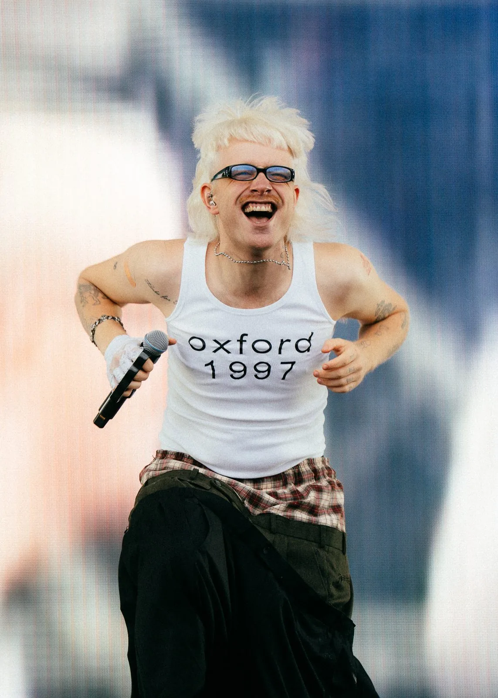
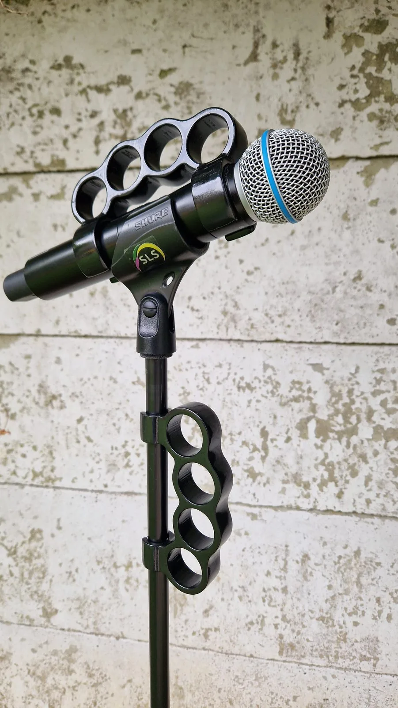
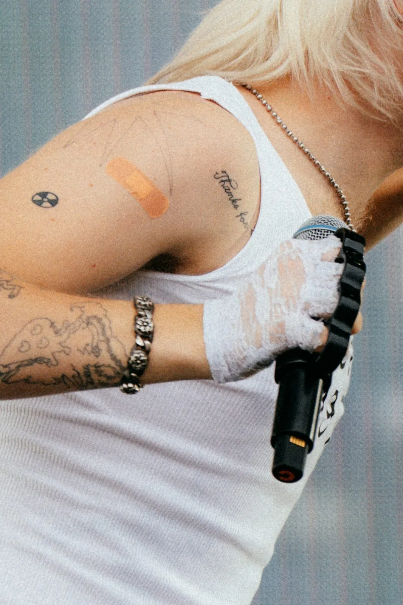

Joost Klein
"Jij bent toch die guy die gameachtige muziekinstrumenten maakt?"

Dat berichtje kreeg ik vorig jaar van het team van Joost Klein, kort voor zijn show op Pukkelpop 2025.
Joost wil voor elk optreden iets unieks. Een week voordat ik op vakantie ging, vroeg hij om een boksbeugel die je op zijn microfoon kunt klikken. Wist je trouwens dat Joost best grote handen heeft? Ik niet.
Ik heb zijn microfoon opgemeten en verschillende 3D ontwerpen gemaakt in Fusion 360. Die printte ik uit, want vaak zie je pas wat je echt wilt als je het ding in handen hebt.
En daar begint het handwerk pas echt. Steeds fijner schuren, dan laag voor laag lakken met tussendoor weer schuren. Heerlijk werk, met een podcast op de achtergrond, en als het lekker weer is gewoon buiten in de tuin. Deze kreeg ik nog net op tijd af, want de dag erna vertrok ik op vakantie.
Ik ben trots dat deze stage prop op het Pukkelpop podium heeft gestaan. Zo word ik langzaam bekend als die guy die iets met muziek en technologie doet.


📸 Pukkelpop-foto's door Jente Vanbrabant
Projectinformatie
- Opdrachtgever
- Joost Klein
- Categorie
- Podium & instrumenten
- Projecttype
- Stage prop, 3D-ontwerp en 3D-print
- Studio Wotto verzorgde
- Concept, 3D-ontwerp, 3D-print en handafwerking
- Gepresenteerd bij
- Pukkelpop 2025
- Fotografie
- Jente Vanbrabant
- Toepassing
- Podia, festivals en shows
- Gerelateerde diensten
- Muziekinstrumenten op maat, stage props, 3D-ontwerp en print